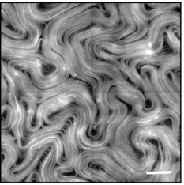

The non-equilibrium characteristics of active matter
Yuting Li (Irene)
Soft matter group, DAMTP
What is active matter?
- Processes that locally injects energy into the environment
- Non-equilibrium; no time reversal symmetry; no Boltzmann distribution etc
Why should I care?
| Myosin walking on actin (Prost et al, Nat phys, 2015) | Microtubule bundles and kinesin (Giomi PRX 2015) |

|
 |
Why should I care?
| Bacterial ratchet motors (Di Leonardo et all PNAS 2010) | Self-propelling discs (Briand, Schindler, Dauchot PRL 2018) |
Why should I care?
Self-propelled hard colloids without alignment
Minimal model for self-propelled bacteria with quorum sensing

Two approches
- Explicitly coarse-grain from microscopic rules
- Make an intelligent guess
The intelligent guess approach
Expand $\rho(x, t) = \rho_\mathrm{ref} ( 1 + \phi(x, t)) $
Require rotational symmetry, translational symmetry, conservation of $\phi$
What about time reversal symmetry?
-
Consider the trajectory $\phi(t)_{t \in [0, T]}$
\begin{equation} \mathbb{P}[\phi(t)_{t \in [0, T]}] = \mathbb{P} [ \phi(t)_{t \in [0, T]} | \phi(0)] P(\phi(0)) \end{equation} -
Consider the reversed trajectory $\phi^\mathrm{R}(t) \equiv \phi(T-t)$
\begin{equation} \mathbb{P}[\phi^R(t)_{t \in [0, T]}] = \mathbb{P} [ \phi^R(t)_{t \in [0, T]} | \phi(T)] P(\phi(T)) \end{equation} -
$\mathbb{P}[\phi^R(t)_{t \in [0, T]}] = \mathbb{P}[\phi(t)_{t \in [0, T]}]$ iff
\begin{equation} R[\phi(t)] \equiv \frac{\mathbb{P} [ \phi(t)_{t \in [0, T]} | \phi(0)]}{\mathbb{P} [ \phi^R(t)_{t \in [0, T]} | \phi(T)]} = \frac{P(\phi(T))}{P(\phi(0))} \end{equation}
In our model $\partial_t \phi = - \nabla \cdot \mathbf{J}_\mathrm{d} - \sqrt{2D} \nabla \cdot \Lambda$
Probability of a trajectory $\phi(t)_{t \in [0, T]}$,
\begin{equation} \mathbb{P} [ \phi(t)_{[0, T]} | \phi(0)] \propto \exp \left [ - \int \mathrm{d}x \mathrm{d}t \frac{1}{4D} \left | \nabla^{-1} (\partial_t \phi + \nabla \cdot \mathbf{J}_\mathrm{d})\right |^2 \right ] \end{equation}Time reversal $\partial_t \phi^R = - \partial_t \phi$,
\begin{equation} R[\phi(t)] = \exp \left [ - \int \mathrm{d}x\mathrm{d}t \frac{1}{D} \partial_t \phi \left ( \mu + \zeta (\dots) \right )\right ] \end{equation}In general, $R(\phi)$ not a function of the endpoints, but if $\zeta = \lambda = 0$,
\begin{equation} \mu(x, t)= \frac{\delta F[\phi(t)]}{\delta \phi(x, t)} \rightarrow R[\phi] = \exp \left [ - \frac{1}{D} (F[\phi(T)] - F[\phi(0)]) \right ] \end{equation}Consequences of the TRS-breaking terms
(Tjhung, Nardini, Cates, PRX 2018)What if we break mass conservation?
- Population dynamics of bacteria
- Birth via cell splitting + competition for resources $\partial_t \rho = - u \rho ( \rho - \rho_\mathrm{t} )$
- In terms of our expansion parameter $\phi$, $\partial_t \phi = \nabla^2 \mu_\mathrm{eq}- u (\phi + \rho_\mathrm{ref})(\phi - \phi_\mathrm{t})$
The limit cycle phase
The arrested steady state phase
Thank you!
This presentation: https://irene-li.github.io/tms_talk